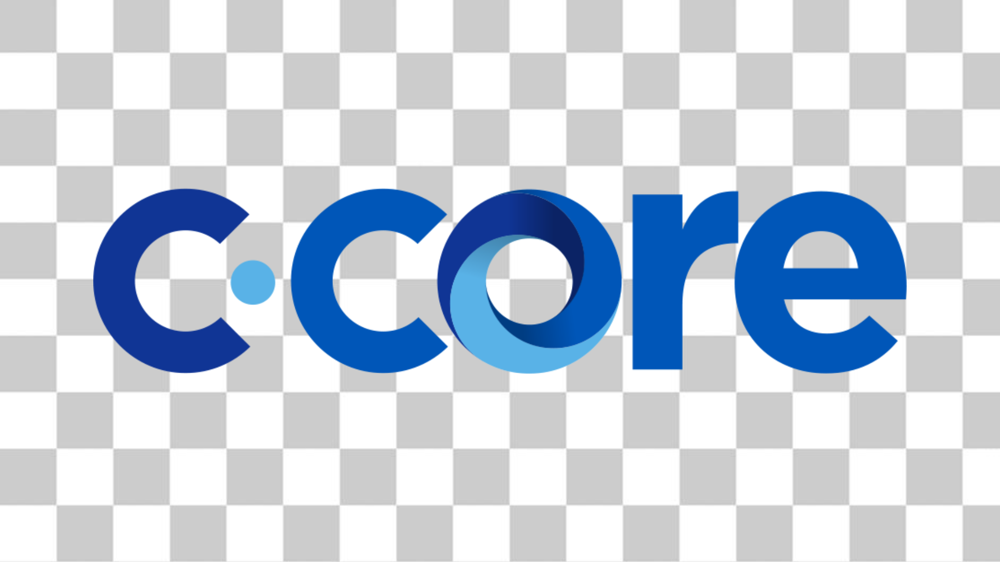

OUR LOGO
Please do not edit, change, distort, recolor, or reconfigure the C-CORE logo.

Keen on keeping things quality.
If you use our designs for something please keep it tasteful and send it our way for approval.
Please do not edit, change, distort, recolor, or reconfigure the C-CORE logo.
Use these only when the C-CORE brand is clearly visible or has been well established elsewhere on the page or in the design. (When in doubt, use the other one.)
Our brand colours play an important role for building strong brand presence and recognition.
Our primary colours are made up of the three colours from our logo.

Primary colours are supported by a bright turquoise colour as well as 100% black.